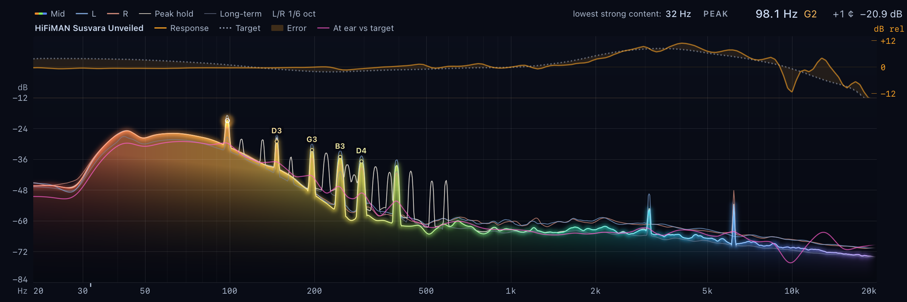
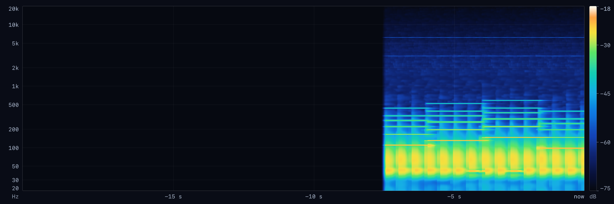
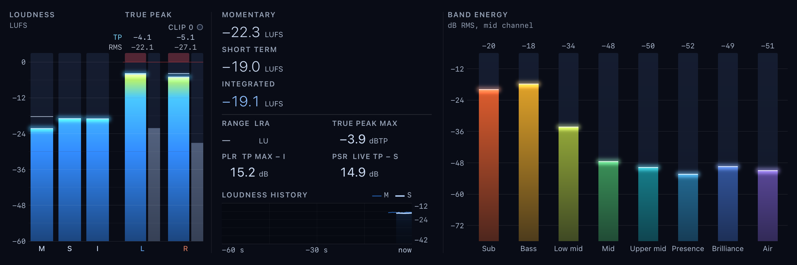

See what you hear.
Joseon reads the sound your computer plays and shows what is in the music and what your headphones must deliver. It only listens. Nothing changes, nothing is recorded, nothing is sent.
FreeOpen source, GPLv3No accountNo analyticsNo driver
Every panel, from the sound your computer plays right now.
Play music in any app. Joseon shows it. All the details →
Log spectrum
Peak hold, long-term average, note readout.
The last minutes as a picture
Click a moment: every panel shows it.
LUFS and true peak
Range, PLR, PSR, clip count, band energy.
Vectorscope and placement
Correlation and balance, per band.
What they must deliver
Measured response, the spectrum at your ear, stress flags.
Timeline and compare
A/B snapshots, now playing, mini spectrum in the menu bar or tray.



A read-only copy at the mixer.
Joseon asks the operating system for a copy of the mix. Your audio path keeps the same bits and the same latency. No driver, no virtual device. How the tap works →
What Joseon does with your data: nothing.
- No account, no analytics, no telemetry.
- No recording. Audio stays in memory, on your computer.
- One network request: the release list on GitHub, to offer updates. Switch it off in Settings.
- Microphone only when you start a headphone measurement.
- Open source under the GPLv3. Checked against the source on 2026-10-13.
The full statement, how to check each claim, and the signing status →
Free, open source, one file.
- Open the dmg, drag Joseon to Applications.
- First start: System Settings → Privacy & Security → Open Anyway.
- Allow "System Audio Recording". Play music.
- Unzip anywhere. Start
Joseon.exe. - First start: More info → Run anyway.
- Play music or a game.